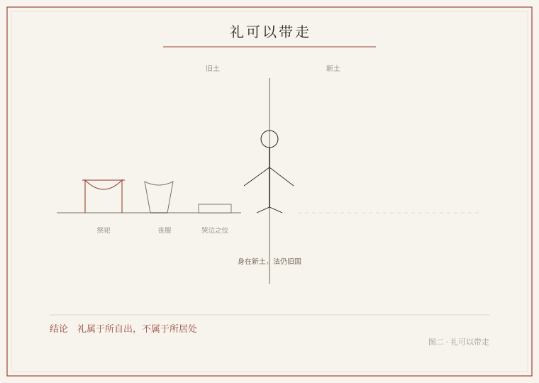

曲礼下 · 二·十一 · 第 134 课
去先祖之国而居他国，行礼不求改易故俗。祭祀之礼、居丧之服、哭泣之位，皆照本国旧法，谨修而审行之。
说什么事：君子行礼，不求变俗。祭祀之礼，居丧之服，哭泣之位，皆如其国之故，谨修其法而审行之。
落在哪一层：礼，兼及礼意。讲的是「重本」。
为何编在此位：前十节皆论一人在朝在门的分寸；自此节起，论一个人离了本国之后，还带不带得走那套礼。
【经】君子行禮，不求變俗。祭祀之禮，居喪之服，哭泣之位，皆如其國之故，謹修其法而審行之。
【注】求猶務也。不務變其故俗，重本也。謂去先祖之國，居他國。其法，謂其先祖之制度，若夏、殷。
【疏】「君子行礼」者，谓去先祖之国，居他国者也。求犹务也。俗者，本国礼法所行也。明虽居他国，犹宜重本，行故国法，不务变之从新也。如杞、宋之臣入於齐、鲁，齐、鲁之臣入於杞、宋，各宜行己本国礼法也。
求 注「求犹务也」。务者，着力去做。不求变俗，是不着力去改。
俗 疏「本国礼法所行也」。俗不是风气，是成法。
国之故 故者，旧也。疏「皆如其国之故，谓故俗也」。
谨修其法 修者，治也。法即先祖之制度。
审行之 审者，慎也。谨修是整备，审行是落地。
若夏、殷 注语。夏殷之后封为杞、宋者，行其先世之礼，即所谓不变俗。
君子居他国而行礼，不致力去改易本国的旧俗。祭祀之礼、居丧之服、哭泣之位，都照本国的旧样，谨慎地修治那套法度，慎重地施行。
礼是可以带走的东西。人离了国，礼不离身；到一个新地方，不必把旧法改成新法。这一句把「礼」与「地」分开：礼属于所自出，不属于所居处。
第一层 重本 注两见「重本」。本是先祖之所出。礼之所以要守旧，不是因为旧的好，是因为旧的是自己的来处。
第二层 三项为例 祭祀、丧服、哭泣之位，一吉一凶一哀，覆盖了人生最重要的三个场面。举此三者，冠昏之属可以从推。
第三层 不变俗不是不变通 所不变者，是「其法」；所审行者，是「行之」的方式。法不变而施行有审，此中余地甚大。
第四层 人君与人臣两义 疏引熊氏：人臣出居他国，不忘本国风俗；人君则在化民，因其旧俗而不改。同一句「不求变俗」，在君在臣，所指不同。
与今日何干 移民、外派、跨城生活的人，最先丢的往往不是语言，是那套过日子的规矩。此节说：可以带走，且应当带走。
| 左 | 右 |
|---|---|
| 君子行礼 | 去先祖之国，居他国 |
| 不求变俗 | 不务变其故俗，重本 |
| 祭祀之礼 | 夏立尸，殷坐尸，周旅酬六尸 |
| 居丧之服 | 殷服傍亲，周以尊降服 |
| 哭泣之位 | 殷以班高处上，周嗣孙居首 |
| 谨修其法而审行之 | 修是整备，行是落地 |
画一条竖直的界线贯穿画面，左侧为旧土、右侧为新土（两侧地面纹理略异，不作具体景物）：左侧地上立着三件极简的礼器轮廓（一只鼎、一件素服、一小片地席），全部留在左侧、朝向界线；右侧新土上空无一物。一人形剪影立于界线上，身体略偏右侧，脚下点仍在左侧。不画人面、不写文字。赭色只用在三件礼器的轮廓线。
